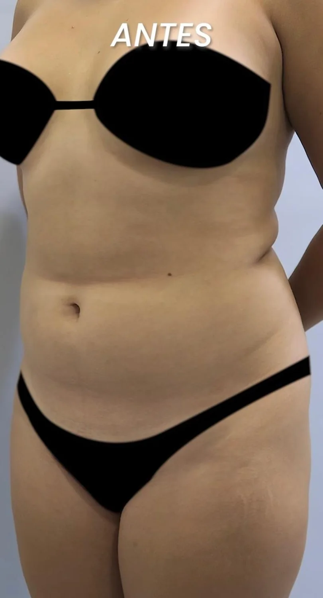

THE BODY. THE INDIVIDUAL.
ENTER THE STORY ↓Anatomy is personal. So is the approach.
BodyCrafting is presented by Dr. Camilo Lemos as his personal approach to body contouring. The first decision is always a clinical assessment of your circumstances and goals.
Meet the mind behind BodyCrafting.

The doctor’s own presentation, published on YouTube. Playback opens the embedded player.
Official practice website ↗The questions come first.
I.Your anatomy & expectations−
BodyCrafting
A personal approach to body contouring, discussed through an individual assessment.
A clinical assessment is the starting point. A digital conversation cannot determine surgical suitability.
II.The individual plan+
Abdominal contour
Explore the options and considerations relevant to your anatomy and expectations.
III.Preparation & continuity+
The clinical team determines preparation, recovery and follow-up. For patients from the US and Canada, travel timing must be confirmed as part of that individual conversation.

A case published by the practice. Images show an individual experience and do not predict outcomes.
YOUR STORY. YOUR STARTING POINT.
Booking preview · no real appointment is reserved.
Carrera 36 #54-08 · Cabecera del Llano · Bucaramanga
WhatsApp +573114220031 ↗Official practice website ↗